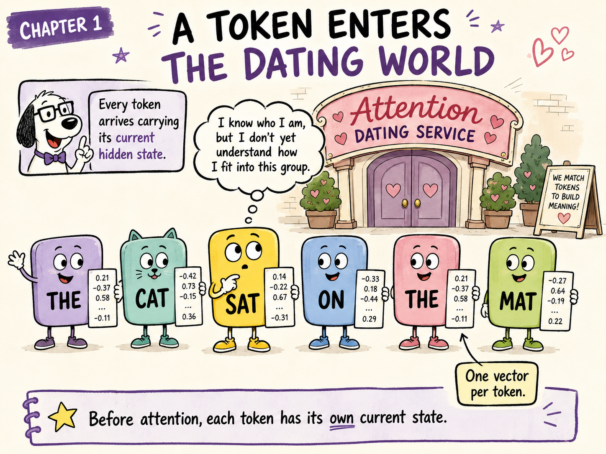
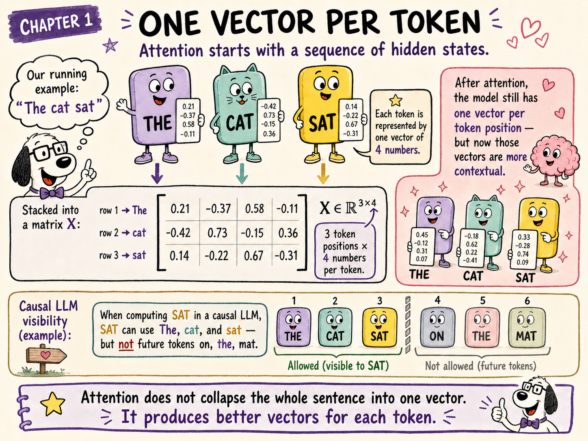
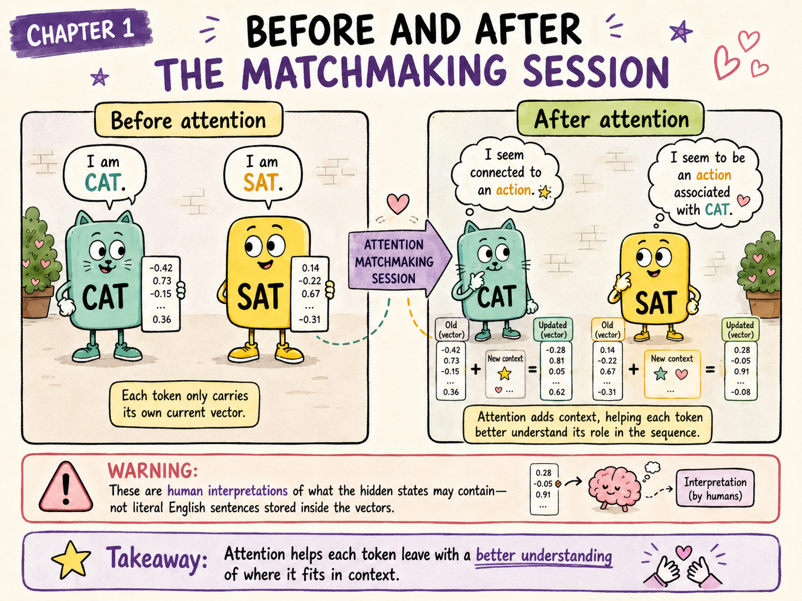

An LLM begins an attention layer with one vector for every token.
But what does that vector represent? And what exactly is attention supposed to improve?
Every token enters attention carrying its current state. It leaves with a richer state that reflects how it fits among the visible tokens.
Our sentence is:
The cat sat on the mat.
Imagine each token as a character entering the Attention Dating Service. Every character carries a card filled with numbers.
Those numbers are the token’s current hidden state.
The card does not contain:
It contains the numerical representation associated with that particular token position at this point in the model.
SAT looks around and wonders:
“I know who I currently am, but I do not yet understand how I fit into this group.”
That is the problem attention is designed to address.
For a token at position \(t\), call its current hidden-state vector:
To keep later calculations manageable, our technical running example will use only three tokens:
The cat sat
and a model width of four:
Suppose the current states are:
Stacking the three row vectors gives the sequence matrix:
Its shape is:
That means:

| Illustration | Transformer concept |
|---|---|
| Token character | One token position |
| Card carried by the token | Hidden-state vector \(x_t\) |
| All tokens standing in sequence | Matrix \(X\) |
| Four values on each card | \(d_{\text{model}}=4\) |
| A richer card after attention | Updated contextual hidden state |
The tensor keeps the token positions ordered:
The;cat;sat.That bookkeeping ensures the output row remains aligned with the input row.
But the learned operations work on the contents of the row vector. They do not automatically receive a special feature saying:
“You are row 1.”
We will return to this distinction when we study positional encoding. For now, the important point is simply:
One row is the model’s current representation of one token occurrence.
It is tempting to imagine:
Do not take the toy dimensions that literally.
In a real LLM:
The four-dimensional vectors are small teaching models. They let us perform the exact calculations by hand without pretending that each coordinate has a neat dictionary label.
A hidden-state vector is not a little database row containing named fields such as role=verb. It is a learned numerical representation whose useful meaning emerges through later operations.
Not necessarily.
At the entrance to the first Transformer layer, a token state begins from something approximately like:
But after several Transformer layers, the vector has already received updates from previous attention and MLP sublayers.
So the most accurate wording is:
A token enters an attention block carrying its current hidden state.
The initial token embedding is only the beginning of that state’s journey.
The passport metaphor is useful:
SAT mostly carries:
Its state may contain signals useful for recognising:
cat is strongly related to it;These descriptions are human interpretations. Internally, the model still carries a vector.
Consider the token bank.
In:
He deposited the cheque at the bank.
the hidden state for bank should become useful for computations involving a financial institution.
In:
She rested beside the river bank.
the same token identity should develop a state useful for computations involving the side of a river.
The token spelling is unchanged. What changed is the surrounding context.
Attention helps move from:
generic
BANK
toward:
this occurrence of
BANKin this sentence.
The state does not need to become a verbal definition. It only needs to encode distinctions that help later layers and the final next-token prediction.
Before the current attention operation, each token carries its own current state.
In the dating-service story:
CAT says, “This is who I currently am.”SAT says, “This is who I currently am.”At this stage, SAT has not yet received the contextual update produced by this attention sublayer.
At a high level, attention produces an update for every token:
For SAT:
The same pattern applies to all positions:
The number of token positions does not change. The model still has one row per token.
What changes is the quality of those rows as representations of the tokens in context.

In human language, we might interpret the change as:
CAT: “I seem connected to an action.”SAT: “I seem to be an action associated with CAT.”But the model does not literally store those sentences. It stores new vectors that make such relationships available to later computation.
Attention does not turn SAT into CAT. SAT keeps its identity and receives information that helps it understand its relationship with CAT.
No. “Neighbourhood” is useful intuition, but it can be misleading if interpreted as only adjacent words.
An attention operation can gather information from any token position that the architecture allows it to see.
In the original Transformer encoder, each source token can inspect every source token.
In a GPT-style LLM, a token can inspect:
but not future positions.
For:
The cat sat on the mat
when computing the state at sat, the visible prefix is:
The cat sat
The future tokens:
on the mat
are masked at that position.
When computing the state at the final mat, however, the complete prefix is visible.
So a better definition of neighbourhood is:
The set of token positions this attention operation is permitted to inspect.
That set may extend far across the context window.
Each token receives a new state that better answers:
“Given the visible tokens in this sequence, where do I fit?”
For sat, the contextual update may make information available corresponding to:
cat;The token does not leave the service with one “soulmate.”
It leaves with a blended report about several relevant relationships.
We have not yet explained how that blend is calculated. That requires Query, Key, Value, scores, and softmax—the cast introduced in the next chapters.
For a sequence of \(n\) tokens:
where:
Therefore:
For the running example:
so:
After the outputs from all attention heads are combined, attention produces a model-width update:
The residual addition is:
This is our first glimpse of the residual stream:
Keep the current state and add a newly computed update.
Suppose attention completely replaced sat with information retrieved from cat.
The model could lose useful information already stored in the sat vector.
Residual addition instead says:
Retain what you already know, then add what you learned.
In the dating-service analogy:
SATdoes not leave asCAT. It remainsSAT, but now carries a richer understanding of how it relates toCAT.
We will study residual connections in detail after completing the attention calculation.
No. Standard self-attention produces one updated vector for every token position.
No. In later layers, it already contains information accumulated from previous attention and MLP sublayers.
A contextual update derived from the visible token states.
sat in “The cat sat on the mat” use mat while computing the state at sat?No. mat is a future token relative to that position.
sat vector literally contain the sentence “CAT is my subject”?No. That is a human interpretation of information the numerical state may make usable.
Before attention, the model has:
Attention’s job is to help each token answer:
“Given the visible token states, what information should update me?”
The result is:
Or, in the dating-world story:
Every token enters knowing who it currently is. It leaves knowing more about where it fits.
SAT has entered the matchmaking service carrying its current state.
But it cannot simply request:
“Tell me everything.”
It needs a learned way to express what kind of information it is looking for.
That is the job of the Question Coach:
In the next chapter, we will first meet the Question Coach as a character and then perform the exact calculation: